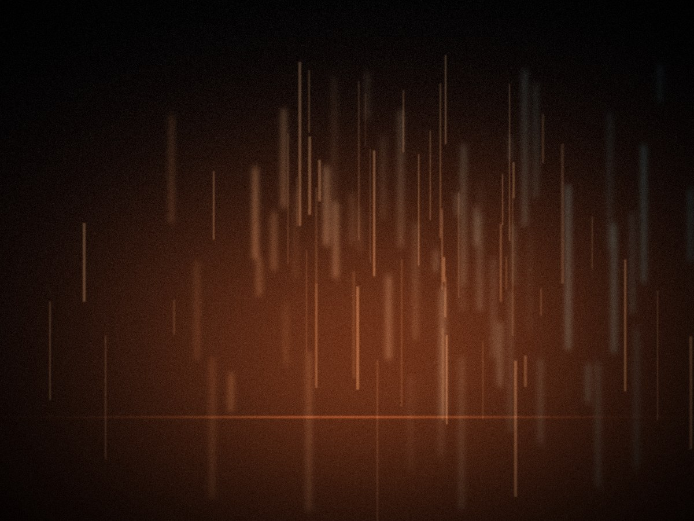

第一次凌晨出门拍照，是因为失眠。我住的那条街白天很吵：修车铺、早餐店、按喇叭的车。到了凌晨两点，它突然安静下来，像一个人终于闭上了嘴。
我带着一台旧相机，从街口走到街尾，再走回来。四十分钟。第一晚什么都没拍到，只有一张糊掉的路灯。
七次夜行
后来变成一种习惯。每周挑一天，一点出门，四点回家。同一段路，七次。我给自己定了个规矩：不摆拍，不打扰，不为了发朋友圈而拍。
拍到的东西很少。便利店的灯白得发冷，店员在补货；末班公交开过去，尾灯在湿路面上拖出一条红线；环卫工坐在马路牙子上吃一个包子；二十四小时洗衣店里，一个男人盯着转动的滚筒发呆。
白天我也见过这些人，但没见过他们停下来。白天的城市要求每个人有目的地，凌晨的城市允许你只是坐着。
只留下三张
七次加起来，拍了两百多张。最后留下的只有三张。一张是便利店，一张是公交尾灯，一张是雨里的红绿灯。其他的都删了。
删照片的时候有点舍不得。但我知道，有些照片只是证明「我来过」，而不是「我看见了」。前者可以删，后者才值得留。

有一次，一个遛狗的大叔停下来问我，拍这些有什么用。我说没什么用。他笑了一下，说，那挺好。
是啊，那挺好。不是所有事都要有用。城市在凌晨把这句话还给我，我就收下了。
· 完 ·